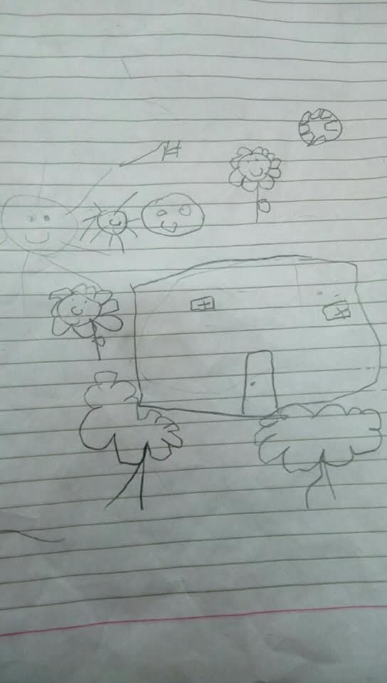
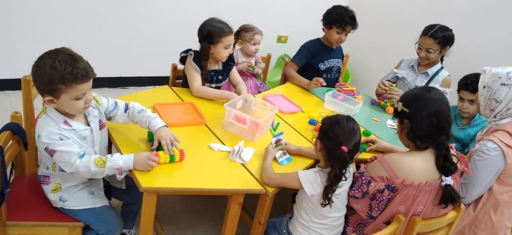
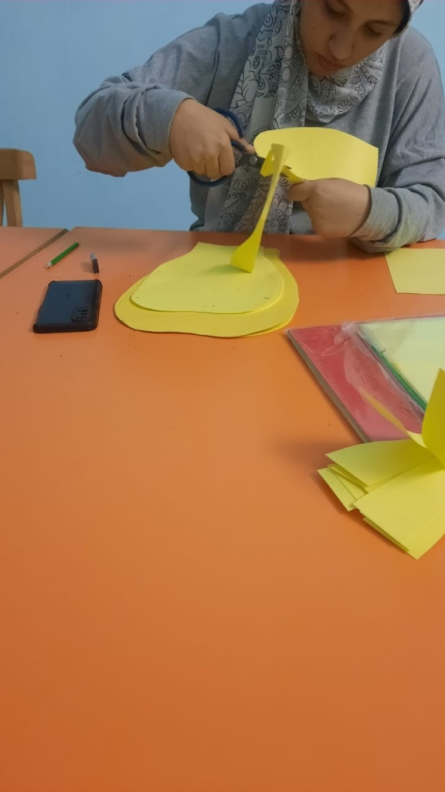
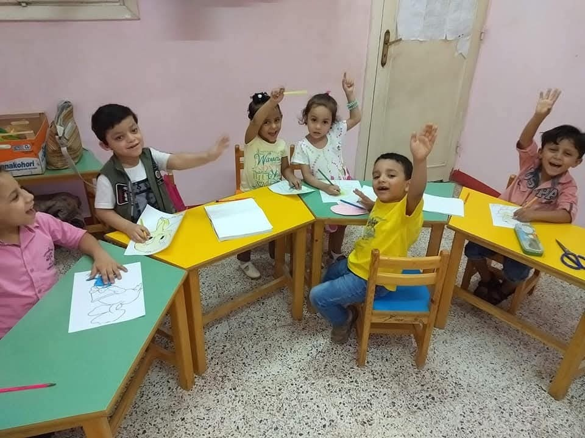
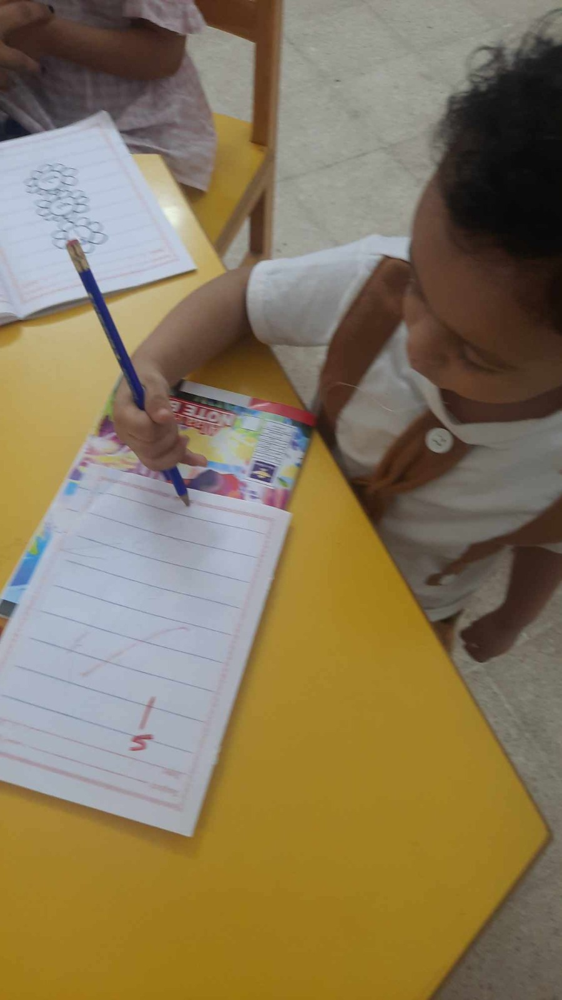

My involvement with Qudurat Academy began on a personal level, as it is closely connected to my mother’s work in special needs education. Growing up in this environment had a direct impact on shaping both my perspective and career direction.
From an early stage, I observed my mother working closely with children with special needs, which gave me a clear understanding of the daily challenges they face and the importance of meaningful, consistent support. This exposure gradually shaped my motivation to contribute in a more impactful way, beyond observation.
This is what led me to pursue Bio-Mechatronics, where engineering is applied to human-centered challenges, particularly in rehabilitation and assistive technologies. I became especially interested in how mechanical design and control systems can support recovery and improve daily functionality.


At Qudurat Academy, I volunteered in several activities, including facilitating art workshops that were specifically designed to support hand muscle development and rehabilitation. These sessions focused on improving fine motor skills, coordination, and muscle control through structured creative tasks.
Through this experience, I developed a deeper understanding of user needs, particularly the importance of designing solutions that are both functional and engaging for rehabilitation purposes. It reinforced my belief that effective engineering must be empathetic, user-focused, and grounded in real human needs, not just technical performance.

